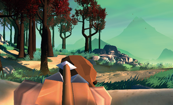
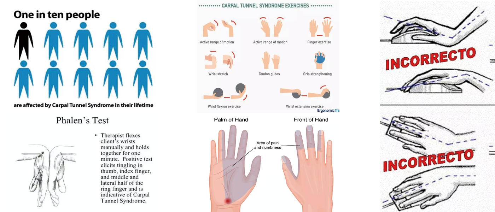
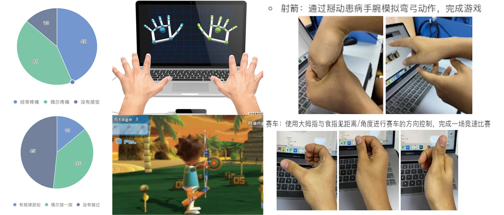
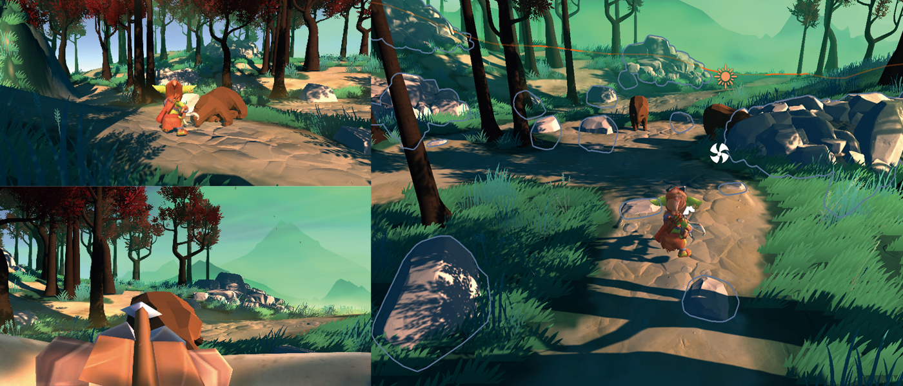

Toggle navigation
IslandLi
PORTFOLIO
爱腕猎手
为缓解使用鼠标而造成的腕关节劳损
设计并开发的一款保健功能3D游戏

项目引入
问题阐述
如今无论学习工作，都离不开使用电脑和鼠标
长期使用鼠标造成持续性腕关节劳损，腱鞘炎
即便是人体工学鼠标也无法避免使用带来损伤
解决方法
腕管综合症（鼠标手）并非不可逆永久性损伤
人们需要规律性切正确的进行腕关节活动放松
但是动作必须正确进行，否则有加重损伤可能
痛点分析
因为其症状时重时轻，容易造成人们忽视
在进行保健恢复时，没有专业正确的引导
无法坚持做到规律性周期性的进行手部放松

项目设计
用户调研
对本校计算机学院学生发放问卷收回91份
63%学生表示手腕部经常出现疼痛无力的症状
其中90%以上没有进行康复运动的经验和意识
需求分析
需要能让人们按照正确和预定的方式活动手腕
需有趣味性，可以吸引人持续进行保健放松
不借助专业设备，可在不同场合进行自主放松
概要设计
骨骼识别计算手部的实时动作，以规范动作
采用3D游戏吸引用户持续进行保健运动
基于轻便易部署的LEAP-MOTION进行开发

游戏设计
故事策划
小哥布林迷失在丛林里，需要闯过这片丛林
有各种各样的猛兽！要用手中弓箭保护自己
游戏方法
玩家通过常规键位控制哥布林的移动和视角
拉弓射击时，需用手腕模拟拉弓及射击动作
控制细节
展开攻击时，识别玩家手部动作并予以引导
只有完成预定的手部动作，才能将弓箭射出

项目规划
开发进展
目前已完成场景搭建及角色控制部分
手部操作涉及医学内容，目前在调整中
本阶段计划
四月底将完成本游戏的全部基础开发内容
届时会考虑对渲染和模型动画进行优化
未来愿景
基于此理念完成多款同风格保健类型小游戏
汇总游戏组成统一世界观(仿照Wii度假胜地)